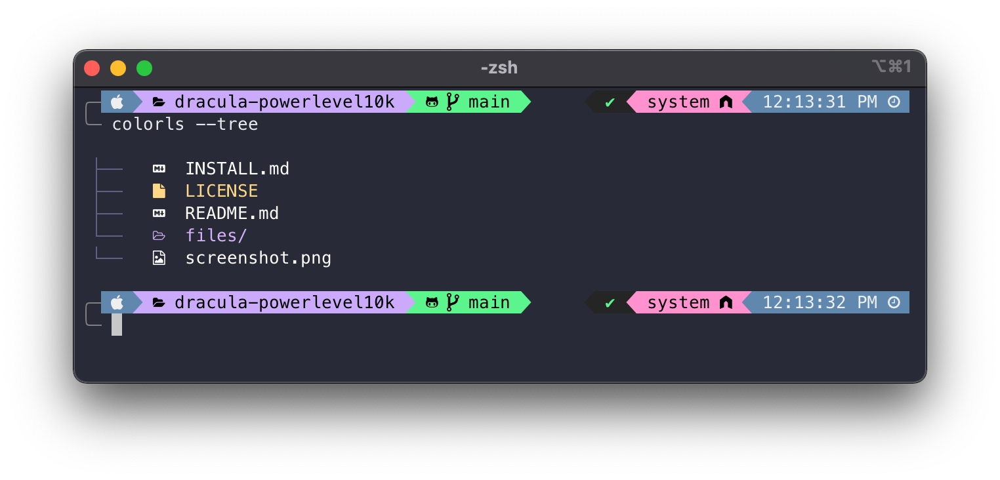

Beautify terminal¶
Here I are planning to add some tips and tricks to beautify your terminal.

Installing oh my zsh¶
Oh My Zsh is an open source, community-driven framework for managing your Zsh configuration.
Read more
More about om-myzsh can be found here.
Installing Powerlevel10k¶
In order for the terminal to look like the one in the image above, you need to install Powerlevel10k theme which is a theme for ohmyzsh. You can install Powerlevel10k by running the following command:
Configure your terminal to use Powerlevel10k theme by adding the following line to your ~/.zshrc file:
Then, restart your terminal or run the following command to apply the changes:
Type p10k configure if the configuration wizard doesn't start automatically.
Installing Meslo Nerd Fonts¶
By default, Powerlevel10k uses Meslo Nerd Fonts to display icons and this can be installed by restarting your terminal or source ~/.zshrc command once you have configured Powerlevel10k. You can also install it manually, please refer the official documentation of manual font installation
If you wish to use this font on VSCode, you can install it by configuring the settings of VSCode. You can do this by going to the settings and searching for font family and adding the following line to the settings:
Installing plugins¶
There are some cool plugins that I feel should be in added to your terminal to make it more productive. I have enlisted some of the plugins below that I feel are useful and I highly recommend you to install them.
zsh-autosuggestions¶
zsh-autosuggestions is a Zsh plugin that suggests commands as you type based on your command history and completions. It helps you to type commands faster and reduces the need to remember long commands.
To install zsh-autosuggestions, run the following command:
git clone https://github.com/zsh-users/zsh-autosuggestions ${ZSH_CUSTOM:-~/.oh-my-zsh/custom}/plugins/zsh-autosuggestions
Then add zsh-autosuggestions to the list of plugins in your ~/.zshrc file:
Finally, restart your terminal or source ~/.zshrc command to apply the changes.
Read more
Read more about zsh-autosuggestions
zsh-syntax-highlighting¶
zsh-syntax-highlighting is a Zsh plugin that provides syntax highlighting for commands as you type. It helps you to identify errors in your commands before you run them.
To install zsh-syntax-highlighting, run the following command:
git clone https://github.com/zsh-users/zsh-syntax-highlighting.git ${ZSH_CUSTOM:-~/.oh-my-zsh/custom}/plugins/zsh-syntax-highlighting
zsh-syntax-highlighting to the list of plugins in your ~/.zshrc file:
Finally, restart your terminal or source ~/.zshrc command to apply the changes.
Read more
Read more about zsh-syntax-highlighting
zsh-history-substring-search¶
zsh-history-substring-search is a Zsh plugin that allows you to search your command history by typing a substring of the command. It helps you to quickly find and reuse commands from your history.
To install zsh-history-substring-search, run the following command:
git clone https://github.com/zsh-users/zsh-history-substring-search ${ZSH_CUSTOM:-~/.oh-my-zsh/custom}/plugins/zsh-history-substring-search
Then add zsh-history-substring-search to the list of plugins in your ~/.zshrc file:
Finally, restart your terminal or source ~/.zshrc command to apply the changes.
Read more
Read more about zsh-history-substring-search